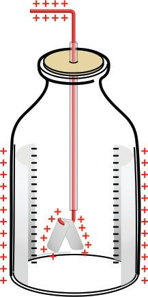
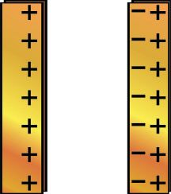
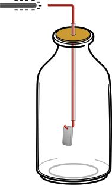
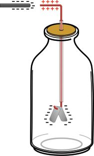
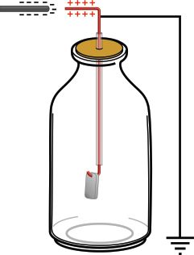
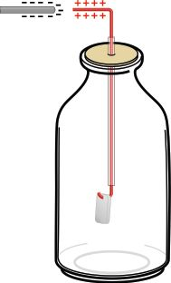
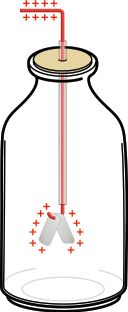

ചിത്രം നിരീക്ഷിണ്ണ-√ോ. മോറോ -റോത്ഥ് (ങീൃീ ഞീരസ ) എന്ന ÿലസ്ഥു
നിന്ന് എടുസ്ഥ ഒരു അത്യപൂയ്യവ ഫോന്തോയാണിത്. ഈ സഹോദ-ര-∑ാരുടെ ഫോന്തോ എടുസ്ഥത് അകലെ നിന്ന സഹോദ-രിയാണ്. ഫോന്തോ
എടുസ്ഥു കഴി-™ ഉട≥തന്നെ ഫോന്തോയിൺ കാണുന്ന വലിയ കുന്തി മിന്നലേ‰ു വീണു.
കുന്തിയുടെ മുടിയിഴ-കƒ ആകാശ-സ്ഥേത്ഥ് ഉയയ്യന്നു നിന്നത് എഗ്ലുകൊ≠ായിരിത്ഥും?
നമുത്ഥ് ചില പ്രവയ്യസ്ഥന-ത്മƒ ചെയ്തു നോത്ഥാം.
വര≠ മുടിയിൺ ഉരസിയ πാല്ലിക് പേനയോ സ്കെയിലോ ചെറിയ കടലാസ് കഷണ-ത്മƒത്ഥരികിൺ കൊ≠ുവരൂ. എഗ്ലു നിരീക്ഷിത്ഥുന്നു?
ചിത്രം 20.1
ഇതുപോലെ നന്നായി ഉരസിയ πാല്ലിക് സ്കെയിലിനെ ഒരു ബ്യൂറ-‰ിൺ
നിന്നോ അ√െന്നിൺ ടാ∏ിൺ നിന്നോ വരുന്ന നേയ്യസ്ഥ ജലധാര-യ്ത്ഥരികിൺ
കൊ≠ുവരൂ. എഗ്ലു നിരീക്ഷിത്ഥുന്നു? നിരീക്ഷണഫലത്മƒ എഴുതൂ.
ഈ പ്രവയ്യസ്ഥന-ത്മളിൺനിന്ന് നിത്മƒ എസ്ഥിണ്ണേരുന്ന നിഗമ-ന-ം എഗ്ലാണ്?
ചിത്രം 20.2
276 അടി-ÿാന-ശാസ്ത്രം ഢകകക
Page 117
Figure fig_ch09_p117_01 (Page 117)
ചില വസ്തുത്ഥƒ പരസ്പരം ഉരസുബ്ബോƒ അവയ്ത്ഥ് മ‰ു വസ്തുത്ഥളെ
ആകയ്യഷിത്ഥാ≥ കഴിയുന്നു.
ചുവടെ കൊടുസ്ഥിരിത്ഥുന്ന വസ്തുത്ഥƒ പരസ്പരം ഉരസിനോത്ഥൂ.
ഊതിവീയ്യ∏ിണ്ണ ബലൂച്ച, എബണൈ‰് റോഡ്, •ാസ്റോഡ്, പി.വി.സി. പൈ∏്,
ചീയ്യ∏്, സിൺത്ഥ്, കബ്ബിളി, പോളിയെല്ലയ്യ, ഉണത്മിയ മുടി, ല്ലീൺ സ്പൂച്ച
തുടത്മിയ-വ.
നിത്മളുടെ ക≠െസ്ഥലുകƒ പന്തിക- 20.1 ൺ ചേയ്യത്ഥുക.
ക്രമ
നബ്ബയ്യ
ഉരസാനുപ-യോഗിണ്ണ വസ്തുത്ഥƒ
ചെറിയ -കട-ലാസ് കഷണ-ത്മളെ
ആകയ്യഷിത്ഥുന്നു ()
ആകയ്യഷിത്ഥുന്നി√ (ണ്മ)
1.
•ാസ്റോഡ്
സിൺത്ഥ്
2.
എബണൈ‰്
കബ്ബിളി
3
ല്ലീൺസ്പൂച്ച
പോളിയെല്ലയ്യ
ണ്മ
4
പന്തിക 20.1
ഈ പ്രവയ്യസ്ഥന-ത്മളിൺനിന്ന് എഗ്ലാണ് നിത്മƒ അനുമാനിത്ഥുന്നത്?
അനുയോജ്യമായ ജോഡി വസ്തുത്ഥƒ തΩിൺ ഉരസുബ്ബോƒ മാത്രമേ
അവയ്ത്ഥ് മ‰ു വസ്തുത്ഥളെ ആകയ്യഷിത്ഥാനു≈ കഴിവ് ലഭിത്ഥുക-യു-≈ൂ.
ഉരസുബ്ബോƒ വസ്തുത്ഥƒത്ഥ് മ‰ു വസ്തുത്ഥളെ ആകയ്യഷിത്ഥാനു≈ കഴിവു
ലഭിത്ഥുന്നതെത്മനെ?
പദായ്യഥത്മƒ നിയ്യമിത്ഥ-∏െന്തിരിത്ഥുന്നത് ത∑ാത്രക-ളാലാണ്. ആ‰-ത്മƒ
ചേയ്യന്നാണ√ോ ത∑ാത്രക-ളു-≠ാകുന്നത്.
ആ‰സ്ഥിലെ അടി-ÿാന കണത്മƒ ആണ് പ്രോന്തോച്ച, ന്യൂട്രോച്ച,
ഇലക്ട്രോച്ച എന്നിവ. ചായ്യജി-√ാസ്ഥ കണമാണ് ന്യൂട്രോച്ച. പ്രോന്തോണുകƒത്ഥ് പോസി-‰ീവ് ചായ്യജും ഇലക്ട്രോണുകƒത്ഥ് നെഗ-‰ീവ്
ചായ്യജും ആണു-≈-ത്. ഏതൊരു ആ‰-സ്ഥിലും ഇലക്ട്രോണുക-ളുടെയും
പ്രോന്തോണുക-ളുടെയും എവ്വം തുല്യമായ-തിനാൺ ആ‰ം വൈദ്യുത-പരമായി നിയ്യവീര്യമാണ്.
$
ആ‰-സ്ഥിൺനിന്ന് ഒരു ഇലക്ട്രോച്ച നഷ്ട-∏െന്താൺ ആ ആ‰-സ്ഥി‚െ
പരിണത ചായ്യജ് എഗ്ലായിരിത്ഥും?
പന്തിക 20.2
ഒരു വസ്തുവിനെ വൈദ്യുത ചായ്യജു-≈-താത്ഥി മാ‰ുന്ന പ്രവയ്യസ്ഥനമാണ് വൈദ്യുതീകര-ണം അഥവാ ചായ്യജിങ് (ഇവമൃഴശിഴ).
ഒരു വസ്തുവിലു-≠ാകുന്ന വൈദ്യുത-ചായ്യജ് ആ വസ്തുവിൺ അതേ
ÿാനസ്ഥ് തത്മിനിൺത്ഥുക-യാണെന്നിൺ അസ്ഥരം വൈദ്യുത ചായ്യജിനെ
ÿിതവൈദ്യുതി (ടമേശേര ഋഹലരൃേശരശ്യേ) എന്നാണു പറയുന്നത്.
ഉരസൺ വഴി ലോഹത്മളെ വൈദ്യുത-ചായ്യജു-≈-താത്ഥാനാകുമോ?
പരിശോധിത്ഥാം.
ഒരു ചെബ്ബുക-ബ്ബി, ഹാക്സോഞ്ഞേഡ്, ല്ലീൺസ്പൂച്ച തുടത്മിയ-വയെ കബ്ബിളി,
സിൺത്ഥ്, പോളിയെല്ലയ്യ എന്നിവ ഓരോന്നും ഉപയോഗിണ്ണ് മാറിമാറി ഉരസിയ-ശേഷം ഓരോ പ്രാവശ്യവും മ‰ു വസ്തുത്ഥളെ ആകയ്യഷിത്ഥുന്നു≠ോ
എന്ന് പരിശോധിത്ഥുക. നിരീക്ഷണ-ഫലം എഴുതൂ.
നിത്മളുടെ നിഗമനം എഗ്ലാണ്?
ഉരസുബ്ബോƒ ലോഹോപ-രിതലം വൈദ്യുതീക-രിത്ഥ-∏െടുന്നു-≠െന്നിലും,
അത് ചാലക-മായ-തിനാൺ ചായ്യജ് മ‰ു ഭാഗത്മളിലേത്ഥ് തൺസമയം തന്നെ
വ്യാപിത്ഥുന്നു. അതിനാലാണ് ലോഹത്മളിൺ ÿിതവൈദ്യുത ചായ്യജ് സ്വരൂപിത്ഥ∏െടാസ്ഥത്.
ചായ്യജ് ചെø-∏െന്ത വസ്തുത്ഥƒ തΩിൺ ആകയ്യഷണം മാത്രമാണോ സംഭവിത്ഥുന്നത്?
ത്മƒ കൊളുസ്ഥിയിടുക. സെ√ോടേ∏് ഉപയോഗിണ്ണ് കായ്യഡ്ബോയ്യഡ് പാത്രസ്ഥിൺ ഉറ-∏ിത്ഥുക.
ഇലക്ട്രോസ്കോ-∏ി‚െ മുകള‰സ്ഥ് ചായ്യജ്ചെയ്ത ഒരു •ാസ്റോഡ് കൊ≠്
സ്പയ്യശിത്ഥൂ. എഗ്ലാണ് നിരീക്ഷിത്ഥുന്നത്? ദളത്മƒ വിടയ്യന്നുനിൺത്ഥുന്നത്
എഗ്ലുകൊ≠ായിരിത്ഥും?
ചായ്യജ്ചെയ്ത ഒരു ഇലക്ട്രോസ്കോ-∏ിലെ ചായ്യജ് എത്മനെ ഇ√ാതാത്ഥാം?
ഇതിനായി താഴെ- കൊടുസ്ഥവ-യിൺ ഉചിത-മായവ ക≠െസ്ഥി അവയ്ത്ഥു
നേരെ () ചി"ം രേഖ-∏െടുസ്ഥുക.
$
തുല്യ അളവിൺ വിപരീത-ചായ്യജ് നൺകുക.
$
തുല്യ അളവിൺ അതേ ചായ്യജ് നൺകുക.
$
ചായ്യജി-√ാസ്ഥ എബണൈ‰് ദfiുകൊ≠് സ്പയ്യശിത്ഥുക.
$
ഒരഗ്രം ഭൂമിയിൺ കുഴിണ്ണിന്ത ലോഹത്ഥബ്ബിയുടെ സ്വതഗ്ല്ര അഗ്രവുമായി
ബ'ി-∏ിത്ഥുക.
ഒരു വസ്തുവിലെ ചായ്യജ് നിയ്യവീര്യമാത്ഥുന്ന പ്രവയ്യസ്ഥനം ഡിസ്ചായ്യജിങ്
എന്ന -പേരിൺ അറിയ-∏െടുന്നു.
എയ്യസ്ഥിങ് (ഋമൃവേശിഴ)
ഒരു വസ്തുവിനെ ലോഹചാലകം ഉപയോഗിണ്ണ് ഭൂമിയുമായി ബ'ി-∏ിത്ഥുന്നതിനെയാണ് എയ്യസ്ഥിങ് എന്ന് പറയുന്നത്. ചായ്യജു≈ ഒരു വസ്തുവിനെ എയ്യസ്ഥു ചെøുബ്ബോƒ ഇലക്ട്രോണുകƒ ഭൂമിയിൺ നിന്ന് വസ്തുവിലേത്ഥോ വസ്തുവിൺനിന്ന് ഭൂമിയിലേത്ഥോ പ്രവഹിണ്ണ് വസ്തുവിലെ
ചായ്യജ് പൂയ്യണമായും നിയ്യവീര്യമാകുന്നു.
ഭൂമി ഏതു സമയ-സ്ഥും ഏതള-വിലും ഇലക്ട്രോണുകളെ വിന്തുകൊടുത്ഥുകയോ സ്വീകരിത്ഥുകയോ ചെøും. അതുകൊ≠് ഭൂമിയെ ഇലക്ട്രോച്ച
ബാന്ന് എന്ന് വിളിത്ഥാറു-≠്. എയ്യസ്ഥിത്മി‚െ പ്രതീകം
ആണ്.
$
പോസി-‰ീവ് ചായ്യജു≈ വസ്തുവിനെ എയ്യസ്ഥ് ചെയ്താൺ ഇലക്ട്രോച്ച
പ്രവാഹം എവിടെനിന്ന് എത്മോന്ത-ായിരിത്ഥും?
$
ചായ്യജ്ചെയ്ത എബണൈ‰് ദfiിനെ എയ്യസ്ഥ് ചെയ്താലോ?
വസ്തുത്ഥƒത്ഥ് ഉരസൺ വഴി മാത്രമാണോ ചായ്യജ് ലഭിത്ഥുന്നത്?
ÿിത വൈദ്യുത-പ്രേരണം (ഋഹലരൃേീമേെശേര കിറൗരശേീി)
ഒരു പ്രവയ്യസ്ഥനം ചെയ്തുനോത്ഥാം.
തൂത്ഥിയിന്ത ഒരു പിസ്ഥ്ബോ-ƒ ചായ്യജ് ചെയ്ത പി.വി.സി. പൈ∏് കൊ≠ു
സ്പയ്യശിത്ഥൂ (ചിത്രം 20.7 (മ)).
ചായ്യജ് ചെയ്ത ഒരു വസ്തുവി‚െ സബ്ബയ്യത്ഥം
മൂലം മ‰ൊരു വസ്തുവിന് ചായ്യജ് ലഭിത്ഥുന്നതിനെ സബ്ബയ്യത്ഥം വഴിയു≈ ചായ്യജിങ് എന്ന്
പറയും. സബ്ബയ്യത്ഥം വഴി ചായ്യജ് ചെയ്തു കഴി™ാൺ ര≠ു വസ്തുത്ഥƒത്ഥും ഒരേ ഇനം
(യ)
ചായ്യജ് തന്നെയാണു-≠ാവുക. സ്പയ്യശന-സ്ഥിചിത്രം 20.7
നുശേഷം പിസ്ഥ്ബോƒ വികയ്യഷിണ്ണ് അകന്നത്
എഗ്ലുകൊ-≠ാണെന്ന് ബോധ്യമായി√േ. ചിത്രം 20.7 (യ).
ഇനി മ‰ൊരു പ്രവയ്യസ്ഥനം ചെയ്തുനോത്ഥാം. നെഗ-‰ീവായി ചായ്യജ് ചെയ്ത
ദfi് ഒരു ഇലക്ട്രോസ്കോ-∏ി-‚െ ലോഹത്ഥബ്ബിയുടെ അടുസ്ഥായി
കൊ≠ുവരുക (ചിത്രം 20.8 (മ)). ദളത്മƒ പരസ്പരം അകന്നുനിൺത്ഥുന്നി√േ? ദളത്മƒത്ഥ് വൈദ്യുത-ചായ്യജ് ലഭിണ്ണത് എത്മനെയായിരിത്ഥും?
നെഗ-‰ീവ് ചായ്യജു≈ ദfi്, ഇലക്ട്രോസ്കോ-∏ി‚െ കബ്ബിയുടെ അടുസ്ഥുകൊ≠ുവരുബ്ബോƒ കബ്ബിയുടെ ആ ഭാഗസ്ഥു≈ ഇലക്ട്രോണുക-ളെ
ആകയ്യഷിത്ഥുമോ? അതോ വികയ്യഷിത്ഥുമോ?
ഇലക്ട്രോണുകƒ എത്മോന്താണ് നീത്മുക?
ചിത്രം 20.8 (മ)
ചിത്രം 20.8 (മ) യുടെ അടി-ÿാന-സ്ഥിൺ ക≠െസ്ഥൂ.
ഇലക്ട്രോണുകƒ എസ്ഥുന്ന ഭാഗസ്ഥ് ഏതു ചായ്യജാണ് ഉ≠ാവുക?
ഇലക്ട്രോണുകƒ നീത്ഥ-∏െന്ത ഭാഗസ്ഥോ?
ചായ്യജ്ചെയ്ത -ദ-fiിനെ മാ‰ിയാൺ ഇലക്ട്രോസ്കോ-∏ിൺ എഗ്ലു മാ‰മാണ് നിരീക്ഷിത്ഥാ≥ കഴിയുന്നത്? ചിത്രം 20.8 (യ) വിശകലനം ചെയ്ത്
നിത്മളുടെ ക≠െസ്ഥൺ ശാസ്ത്രപുസ്തക-സ്ഥിൺ കുറിത്ഥൂ.
ഈ മാ‰-സ്ഥിനു≈ കാരണ-മെഗ്ലായിരിത്ഥും?
ഇലക്ട്രോണുകƒ പൂയ്യവ-ÿാന-ത്മളിലേത്ഥ് വിന്യസിത്ഥ-∏െടുന്നതിനാൺ
ദളത്മƒത്ഥ് ലഭിണ്ണ ചായ്യജ് നഷ്ട-∏െടുകയും ദളത്മƒ പരസ്പരം അടുസ്ഥു
വരുകയും ചെøും.
ചിത്രം 20.8 (യ)
ചായ്യജ് ചെയ്ത ഒരു •ാസ്റോഡ് ഇലക്ട്രോസ്കോ-∏ിന-ടുസ്ഥു കൊ≠ു
വരു- ഏബ്ബാƒ ഇല- ക ് ഏട്രാ- സ ് ഏകാ- ∏ ഇൺ ചായ്യജു- ≠ ആ- ക ഉന്ന വിധം വരണ്ണു
കാണിത്ഥുക.
ചായ്യജ് ചെയ്ത ഒരു വസ്തുവി‚െ സാന്നിധ്യം മൂലം മ‰ൊരു വസ്തുവിൺ നടത്ഥുന്ന ചായ്യജുക-ളുടെ പുനക്രമീക-രണസ്ഥെ ÿിതവൈദ്യുത
പ്രേരണം എന്ന് പറയുന്നു.
പ്രേരണം വഴി ഒരു ഇലക്ട്രോസ്കോ-∏ിനെ ÿിരമായി ചായ്യജ് ചെøാനാകുമോ?
282 അടി-ÿാന-ശാസ്ത്രം ഢകകക
Page 123
Figure fig_ch09_p123_01 (Page 123)

Figure fig_ch09_p123_02 (Page 123)

Figure fig_ch09_p123_03 (Page 123)

Figure fig_ch09_p123_04 (Page 123)

Figure fig_ch09_p123_05 (Page 123)

Figure fig_ch09_p123_06 (Page 123)

Figure fig_ch09_p123_07 (Page 123)

Figure fig_ch09_p123_08 (Page 123)
താഴെ കൊടുസ്ഥ ചിത്രത്മƒ ക്രമമായി വിശക-ലനം ചെയ്ത് നിഗമ-നത്മƒ
ശാസ്ത്രപുസ്തക-സ്ഥിൺ എഴുതൂ.
(മ)
(യ)
(ര)
(റ)
(ല)
ഇലക്ട്രോസ്കോ∏ിനു
സമീപ-സ്ഥായി നെഗ‰ീവ് ചായ്യജ് ചെയ്ത
ദfiു കൊ≠ുവ-രുന്നു.
ഒരു ഇലക്ട്രോസ്കോ-∏ിനെ പ്രേരണം വഴി ഏറെ നേരം നിലനിൺത്ഥസ്ഥത്ഥ രീതിയിൺ ചായ്യജ് ചെയ്താൺ അതിൺ രൂപ-∏െടുന്നത് ചായ്യജ്
ചെøാനുപ-യോഗിണ്ണ വസ്തുവി‚െ വിപരീത-ചായ്യജായിരിത്ഥും.
ഇലക്ട്രോസ്കോ-∏ിനെ പ്രേരണം വഴി നെഗ-‰ീവ് ആയി ചായ്യജ് ചെøുന്നവിധം ശാസ്ത്രപുസ്തക-സ്ഥിൺ എഴുതുക.
ഒരു ഇലക്ട്രോസ്കോ-∏് ചായ്യജ് ചെയ്ത് ദീയ്യഘനേരം വണ്ണിരുന്നാൺ അതി‚െ
ദളത്മƒ സാവധാനം അടുത്ഥുന്നതായി കാണാം.
എന്നാൺ കു∏ിയുടെ അടിഭാഗം മുറിണ്ണ് അകവ-ശസ്ഥ് അലുമിനിയം ഫോയിൺ
ചിത്രസ്ഥിലേതുപോലെ ഒന്തിണ്ണുവണ്ണിരുന്നാലോ?
ഫോയിലി‚െ അക- വ - ശ സ്ഥ് പ്രേരണം ചെø∏െടുന്ന ചായ്യജ് ഏത് ?
ഫോയിലി‚െ പുറംഭാഗസ്ഥോ? ചിത്രം 20.10 വിശ- ക - ല നം ചെയ് ത ഉ
ക≠െസ്ഥൂ.
ചായ്യജ് ചെയ്ത വസ്തുവിന-ടുസ്ഥ് ഒരു ലോഹചാലകം വണ്ണാൺ ചായ്യജ്
ചെയ്ത വസ്തുവിന് അഭിമുഖ-മായി വരുന്ന ലോഹചാല-കസ്ഥി‚െ ഉപരിതല-സ്ഥിൺ വിപരീത-ചായ്യജ് പ്രേരണം ചെøും. ഈ വിപരീത-ചായ്യജുക-ളുടെ
ആകയ്യഷണം നിമിസ്ഥം ഇലക്ട്രോസ്കോ-∏ിലെ ചായ്യജ് ഏറെനേരം നിലനി-ൺത്ഥും. ഈ തസ്ഥ്വം പ്രയോജ-ന-∏െടുസ്ഥിയാണ് ക∏ാസി-‰യ്യ നിയ്യമിണ്ണിരിത്ഥുന്നത്.
ചിത്രം 20.10
അ
ആ
ക∏ാസി-‰യ്യ (ഇമുമരശീേൃ)
ചിത്രം 20.11 (മ) ലേതുപോലെ പോസി-‰ീവായി ചായ്യജ് ചെയ്ത അ എന്ന
ലോഹ-πേ-‰ിന-ടുസ്ഥ് ആ എന്ന ലോഹ-πേ‰് വയ്ത്ഥുക.
ആ πേ‰ി‚െ അ യോട് അടുസ്ഥു≈ ഭാഗസ്ഥ് ഏതു ചായ്യജാണ് പ്രേരണം
ചെøുക? അകലെയു≈ ഭാഗസ്ഥോ?
ചിത്രം 20.11 (യ) യിലേതുപോലെ ആ എന്ന πേ‰ിനെ എയ്യസ്ഥ് ചെയ്താൺ
ആ πേ‰ിൺ നിലനിൺത്ഥുന്ന ചായ്യജ് ഏതായിരിത്ഥും?
ആ
ഈ സംവിധാന-സ്ഥിൺ വൈദ്യുത-ചായ്യജ് ഏറെനേരം നിലനിയ്യസ്ഥാനാവും. അഥവാ സംഭ- ര ഇ- ണ്ണ ഉ- വ യ് ത്ഥ ആനാവും. ഇവ- യ ് ത്ഥ ഇട- യ ഇൺ ഒരു
വൈദ്യുതമfiലം രൂപംകൊ≈ുന്നതാണ് ഇതിനു കാരണം. ഇപ്രകാരം
വൈദ്യുതചായ്യജിനെ സംഭരിണ്ണു വയ്ത്ഥാ≥ കഴിയുന്ന സംവിധാനസ്ഥെ
ക∏ാസി-‰യ്യ (ഇമുമരശീേൃ) എന്ന് പറയുന്നു.
ചിത്രം 20.11 (യ)
πേ‰ുകƒത്ഥ് നി›ിത പര-∏-ളവു≈ ഒരു ക∏ാസി-‰-റി‚െ വൈദ-്യുതി
സംഭരിത്ഥാനു≈ ശേഷി വയ്യധി-∏ിത്ഥാ≥ πേ‰ുകƒത്ഥിടയിൺ അനുയോജ-്യമായ ഇ≥സുലേ-‰-റുകƒ ഉപയോഗിത്ഥാറു≠്. ഇസ്ഥരം ഇ≥സുലേ-‰-റുകളെ
ഡൈ ഇല- ക ് ്രടിക് (ഉശലഹലരൃേശര) എന്ന് വിളി- ത്ഥ ഉന്നു. പേ∏യ്യ, വായു,
പോളിയെസ്‰യ്യ തുടത്മിയവ ഡൈ ഇലക്ട്രിത്ഥുക-ളായി ഉപയോഗിത്ഥാം.
ഡൈ ഇലക്ട്രിത്ഥുക-ളുടെ പേരിലാണ് സാധാര-ണയായി ക∏ാസി-‰-റുകƒ
അറിയ-∏െടുന്നത്. ക∏ാസി-‰-റി‚െ ചായ്യജ് സംഭരിത്ഥാനു≈ ശേഷിയാണ്
ക∏ാസി-‰≥സ്. ഇതി‚െ യൂണി‰് ഫാരഡ് (എ) ആണ്.
1 എ = 106 എ (മൈക്രോഫാര-ഡ്)
1 എ = 1012 ജഎ (പീത്ഥോഫാര-ഡ്)
വൈദ്യുതചായ്യജി‚െ വിതരണം
വിവിധ-തരം ക∏ാസി-‰-റുകƒ (ഉശൃേെശയൗശേീി ഈള ലഹലരൃേശര രവമൃഴല)
ചിത്രം 20.12
ഒരു ലോഹവ-സ്തുവിനെ ചായ്യജ് ചെയ്താൺ അതിലെ ചായ്യജ് എപ്രകാരമാണ് വിതരണം ചെø-∏െടുക? വ്യത്യസ്ത ആകൃതിയിലു≈ ലോഹവസ്തുത്ഥളെ ചായ്യജ് ചെയ്ത ചിത്രത്മƒ നൺകിയിരിത്ഥുന്നു. ചിത്രസ്ഥിൺ കാണുന്ന
ഡോന്തഡ് ലൈനുകƒ സൂചി-∏ിത്ഥുന്നത് ചായ്യജുക-ളുടെ വിതര-ണമാണ്. ചിത്രത്മƒ നിരീക്ഷിണ്ണ് ക≠െസ്ഥലുകƒ എഴുതൂ.
(മ)
(ര)
(യ)
ചിത്രം 20.13
ഒരു ചാലക-സ്ഥിൺ വിതരണം ചെø-∏െടുന്ന ചായ്യജ് അതി‚െ
ഉപരിതല-സ്ഥിൺ മാത്രമായിരിത്ഥും. കൂയ്യസ്ഥ അഗ്രത്മളിൺ ചായ്യജി‚െ
അളവ് കൂടുത-ലായിരിത്ഥും.